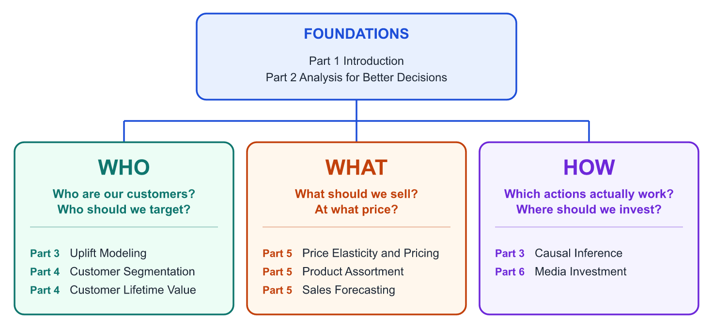

Marketing Science in Python
Guide pratique de l’inférence causale, du marketing mix modeling, de la tarification, de la prévision et de l’analyse client
Préface

À propos de la version française
Cette page est une traduction par IA de la version anglaise de Marketing Science in Python. La version anglaise fait foi et prévaut en cas de divergence. Le code, les notebooks et le texte intégré aux images restent en anglais. Lire la version anglaise
La campagne du mois dernier a provoqué un pic des ventes, et l’équipe s’en réjouit. Mais était-ce vraiment grâce à la campagne ? Les températures ont augmenté cette même semaine. Un concurrent s’est retrouvé en rupture de stock. Un influenceur a publié un contenu sur le produit. Même si les ventes ont progressé, la campagne a-t-elle réellement attiré de nouveaux clients à forte valeur, ou a-t-elle simplement déplacé des achats qui auraient eu lieu de toute façon ?
Même en 2026, il reste difficile de répondre à ces questions. L’IA a accéléré le volet créatif du marketing, par exemple la rédaction de textes publicitaires, la production de bannières et la création de pages de destination. Les assistants de programmation ont permis d’écrire du code et de mener des analyses beaucoup plus rapidement. Mais le volet décisionnel n’a pas suivi le même rythme. Des questions comme « Cela a-t-il fonctionné ? » et « Que devons-nous faire ensuite ? » restent tout aussi complexes. En marketing, il est impossible de mesurer ou de contrôler toutes les variables qui comptent. Il faut prendre des décisions dans l’incertitude, souvent dans des délais serrés. C’est là que le jugement humain est le plus important.
Ce livre est un guide pratique pour rendre les décisions marketing plus fiables. Trois éléments le distinguent :
- Le livre se concentre sur les problèmes fondamentaux du marketing. Il traite des problèmes marketing pour lesquels la science des données est la plus utile en pratique. Ce n’est pas un catalogue de modèles.
- Des notebooks Python sont fournis. Chaque chapitre pratique des parties 3 à 6 s’accompagne d’un notebook, exécuté sur un jeu de données public ou sur des données synthétiques. Chaque notebook est enregistré avec ses résultats, afin que vous puissiez les consulter sur GitHub.
- Des bibliothèques Python modernes sont utilisées. Le livre utilise des outils tels que Google Meridian, PyMC-Marketing, EconML, TimesFM et BERTopic. L’objectif n’est pas de mettre en avant ces bibliothèques, mais d’expliquer le problème que chacune aide à résoudre.
C’est le guide que j’aurais aimé avoir lorsque j’ai commencé à appliquer la science des données au marketing.
À qui s’adresse ce livre
J’ai écrit ce livre en pensant à trois catégories de lecteurs :
- Les data scientists qui travaillent dans le marketing ou qui s’orientent vers ce domaine. Si vous maîtrisez déjà les statistiques et l’apprentissage automatique, mais souhaitez approfondir les problématiques propres au marketing, ce livre est fait pour vous.
- Les analystes marketing qui veulent voir la mise en œuvre. Si vous connaissez des méthodes telles que l’inférence causale ou la modélisation du mix marketing (MMM), mais souhaitez voir comment elles sont mises en œuvre en pratique, le livre propose des exemples Python de bout en bout.
- Les spécialistes du marketing et les dirigeants qui veulent utiliser la science des données plus efficacement. De plus en plus de spécialistes du marketing et de dirigeants pratiquent désormais le vibe coding avec l’IA pour réaliser eux-mêmes leurs analyses. Si vous en faites partie, ce livre constitue un point de départ pour comprendre ce que ces analyses peuvent accomplir, et ce qu’elles ne peuvent pas accomplir. Vous pouvez ignorer le code et vous concentrer sur la formulation du problème au début de chaque chapitre.
Ce livre n’est pas une introduction à Python ni à l’apprentissage automatique. Ce n’est ni un manuel théorique ni un ouvrage consacré aux tactiques de marketing numérique. Il se situe plutôt à leur intersection : la science des données appliquée aux décisions marketing.
Comment lire ce livre
Les parties 1 et 2 posent les bases : ce qu’est la science du marketing, à quoi ressemblent les données marketing et comment concevoir une analyse qui conduit à de meilleures décisions. Lisez-les en premier. Ensuite, il n’est pas nécessaire de suivre l’ordre du livre. Choisissez le parcours qui correspond à la question qui se pose à vous.

À propos de l’auteur

Jimmy Hajime Takeda est spécialiste de la science du marketing et cofondateur de Kuwalyst. Il possède dix ans d’expérience dans l’application de la science des données aux décisions marketing et commerciales au Japon et aux États-Unis, notamment chez P&G. Il participe également activement à la communauté de la science des données en partageant ses apprentissages lors de conférences telles que PyData, ODSC et SciPy, ainsi qu’en écrivant pour Towards Data Science. Retrouvez-le sur LinkedIn.
Remerciements
Un grand merci à Julien Bourdon-Miyamoto (cofondateur et PDG de Kuwalyst ; ancien Staff Ads ML Engineer chez Meta) pour la relecture technique de ce livre.
Merci également à Colt Allen (PyMC Labs) pour ses conseils sur PyMC-Marketing et la modélisation de la valeur vie client.